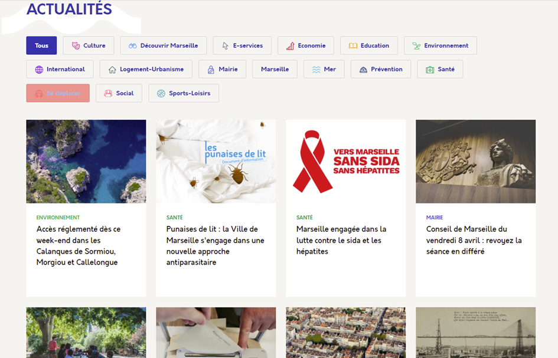

Mon Alternance à la Ville de Marseille
- 1 an en tant que Correspondant informatique aux services informatique lier à la direction des ressources partagé de la Direction Générale de l’Urbanisme, du Foncier et du Patrimoine (DGAUFP).
- 1 an en tant que Développeur de solution applicative interne aux services du développement logiciel lier à la direction des projets et logiciels informatiques de la Direction Générale Adjointe du Numérique et du Système d'Information (DGANSI).
Mes situations professionnelles
OCS Inventory
Pour le recensement des ressources telles que les postes de travail, les
imprimantes et les logiciels installés sur ces postes, la Ville de Marseille
utilise le logiciel OCS Inventory qui est sous licence libre GNU GPL 2. J’ai pu
utiliser cet outil au cours de mon apprentissage pour vérifier la disponibilité
des postes et recenser les logiciels installés sur ces postes en fonction des
autorisations de chaque utilisateur.
Ci-contre un exemple d’identification de ressource (cliquez sur l'image pour
agrandir).
Ces informations sont également disponibles à distance via la connexion a une
application web qui liste les postes connectés au réseau et qui disposent de OCS
Inventory.
Easy Vista
Le logiciel Easy Vista est un logiciel qui permet de réaliser un inventaire
complet des ressources et d’y associer un compte d’agent via la liaison avec
l’Active Directory de la Ville de Marseille.
On y trouve une fiche descriptive par agent comprenant l’identification des
ressources qui lui sont attribuées ainsi que l’historique des incident et
demandes de services qu’il a effectuées.
capture d'écran ci-contre (cliquez sur l'image pour agrandir).
Serveur d'impression
Le serveur d’impression est un service qui permet de recenser les imprimante connecter au réseau et de les administrer.
méthode ITIL
La méthode adopter par le service support de la ville de Marseille est la méthode ITIL (pour Information Technology Infrastructure Library, qui peut se traduire par Bibliothèque de l’Infrastructure des Technologies de l’Information) qui consiste en un ensemble de bonne pratique qui concerne la gestion d’un parc informatique ainsi que la gestion d’incident des utilisateurs de ce parc. Cette méthode de travail permet entre autres d’avoir :
- Des gain de temps et une réduction des couts
- Définition des rôles et responsabilités plus précises
- Des utilisateurs plus satisfait et plus productifs
- Un services IT de meilleures qualités
Le Référentiel Acteur
Le Référentiel Acteur (ou RFA) est un service web développé par la Ville de
Marseille pour gérer les habilitations de chaque agent. Il concerne les
autorisations d’accès aux logiciels métier correspondant à leurs fonctions. Il
permet également de gérer les accès attribués à l’administrateur de ces
logiciel.
Le RFA permet également la gestion des accès internet par poste ainsi que la
gestion physique des accès aux bâtiments via l’utilisation d’un badge.
Gérer des sauvegardes
Pour la gestion des dossiers et fichiers partagés, la Ville de Marseille utilise un service de stockage de données à distance accessible via l’explorateur de fichiers Windows. Ce stockage est hébergé sur un serveur dédié géré par la ville. Ce service possède un système de sauvegarde automatique qui enregistre l’état et le contenu de chaque dossier toutes les heures pendant une durée de 2 semaines, avant leur effacement automatique. A partir de chaque sauvegarde il est possible de restaurer l’état et le contenu d’un dossier à une date et une heure données.
Vérifier le respect des règles d’utilisation des ressources numériques
Les règles d’utilisation des ressources numériques sont définies par la charte
informatique de la Ville de Marseille. Celle-ci recense les droits, obligations
et bonnes pratiques liées à l’utilisation des outils numériques et du système
d’information. En tant que correspondant informatique, l’une de mes missions
était de veiller au respect de cette charte ainsi que la formation des
utilisateurs aux bonnes pratiques. Par exemple, lors de la mise en place du
télétravail, mon rôle était d’expliquer aux utilisateurs le fonctionnement des
outils de télétravail tels que la connexion au VPN ou l’accès au bureau à
distance.
Ci-contre un extrait de la charte informatique de la Ville de Marseille (cliquez
sur l'image pour
agrandir).
Collecter, suivre et orienter des demandes
Pour la collecte, les utilisateurs contactent le correspondant informatique de
la direction par mail ou par téléphone. Celui-ci tente alors de résoudre
l’incident soit en prenant la main à distance sur le poste de l’utilisateur,
soit en se rendant physiquement sur le poste de travail. Lorsque le
correspondant informatique ne parvient pas à résoudre l’incident, il fait appel
par mail au service support situé à la Direction Générale Adjointe Numérique et
Système d'Information (DGANSI) qui va alors prendre en charge la demande et
ouvrir un ticket d’incident dans Easy Vista. Les techniciens du support vont
informer le correspondant informatique tout au long du processus de résolution
de l’incident.
Traiter des demandes concernant les services réseau et système
Le logiciel utilisé pour enregistrer les demandes de support informatique des
utilisateurs est Easy Vista. Il est déployé sur un serveur de la Ville de
Marseille qui dispose d’une licence hébergée.
Les étape de traitement du ticket sont :
- la création du ticket avec les informations fournies par le correspondant informatique qui a traduit le problème rencontré par l’utilisateur.
- La sortie du stock de matériel ( optionnel )
- réalisation de la tâche à effectuer, à distance ou avec un déplacement d’un technicien sur le poste de l’utilisateur en fonction de la nature de l’incident
- la création d’une recette ( optionnel ) : dans les cas d’incident redondant, le technicien rédige une procédure type qui permettra de faciliter la résolution des incidents similaires ultérieurs
- la mise à jour du parc ( optionnel ) en cas de changement de matériels
- la clôture du ticket avec information du correspondant informatique
Un ticket est priorisé en fonction de son impact et de son urgence. L’impact définit les conséquences du dysfonctionnement sur l’utilisateur ou sur le système d’information. L’urgence indique le délai dans lequel la demande doit être pris en charge et traitée. La priorité du ticket est alors élevée s’il y a un fort impact pour l’utilisateur ( impossibilité de travailler ) ou si l’utilisateur a des fonctions importantes (directeur de service).
Participer à la valorisation de l’image de l’organisation sur les médias numériques en tenant compte du cadre juridique et des enjeux économiques
La Ville de Marseille dispose d’un site internet qui regroupe l’accès aux
différents services de la ville, les informations concernant tous les domaines
de celle-ci ( environnement, éducation, santé, transports …) et également des
articles sur des sujet d’actualité.

Capture d'écrans des differents réseaux sociaux de la Ville de Marseille (cliquez pour faire defiler) :
Référencer les services en ligne de l’organisation et mesurer leur visibilité
Voici quelque statistique du site de la Ville de Marseille :
- Visites totales - Somme de toutes les visites sur desktop et mobile du mois
dernier :
363.8K
- Taux de rebond - Pourcentage moyen de visiteurs qui ne consultent qu'une
seule page avant de quitter le site web
47.97%
- Pages par visite - Nombre moyen de pages par visite
5.01
- Durée moyenne de la visite - Temps moyen passé sur le site
00:04:20
Participer à l’évolution d’un site Web exploitant les données de l’organisation
Signamel est une application web interne qui permet de générer une signature d’email de façon automatique en se basant sur les donnée de L’active Directory.
Cahier des charges fonctionnelAccompagner les utilisateurs dans la mise en place d’un service
L'une de mes missions principales en tant que correspondant informatique a été d'aider les agents à l'installation d'un pc portable avec un accès VPN au réseau de la Ville de Marseille afin de pourvoir faire du télétravail.
Tutoriel d'installation du VPN